The Twelve · 12 种线下呈现形式
从 线圈微距 到 定制纸样夹
每一种，都是一种"让客户摸到"的语言
下面 12 种形式都来自 B2B 面料行业的真实使用场景——欧美一线面料厂（Pontetorto、Eurojersey、Schoeller）、面料贸易行（Maharam、Kvadrat）、纱线展（Pitti Filati）、设备商（Shima Seiki、Stoll）、品牌商（Sunspel、John Smedley、Le Minor）。不是创意点子，是同行已经在用的标准物料。本节按编号顺序逐一展开，每种含一张标杆图、80 字定义、四项关键参数与"谁在做"的标杆案例。
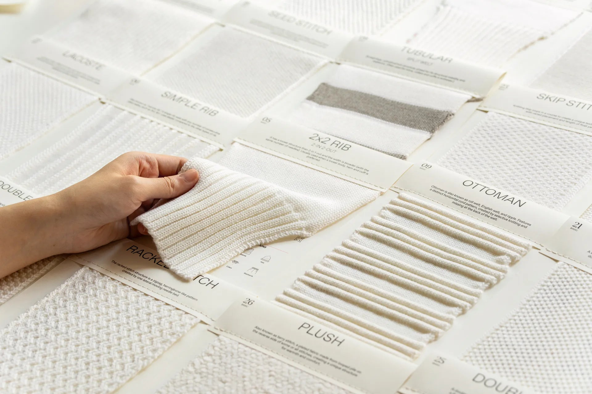
线圈微距卡
Loop Macro CardA5 厚卡，正面是放大 200% 的针织线圈微距摄影——能清楚看见每一根纱线如何穿过前后线圈、表面起绒、织针痕迹。背面贴一片真实面料样。客户先用眼睛"读懂"这块布的结构，再用手感受。
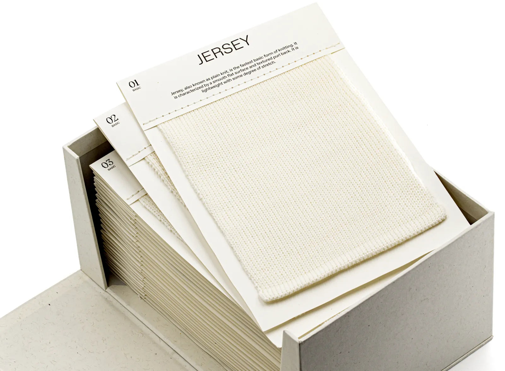
组织结构图谱
Stitch Atlas / Knit Structure Book装订成册的"针织组织字典"。每页一种针法（1×1 罗纹、双面提花、米兰诺、Interlock、Pointelle、3D 提花、Cable…），同款纱线、同款克重，只换组织。客户能直观对比"同样是 32 支精梳棉，做成单面 vs 双面，差别在哪"。
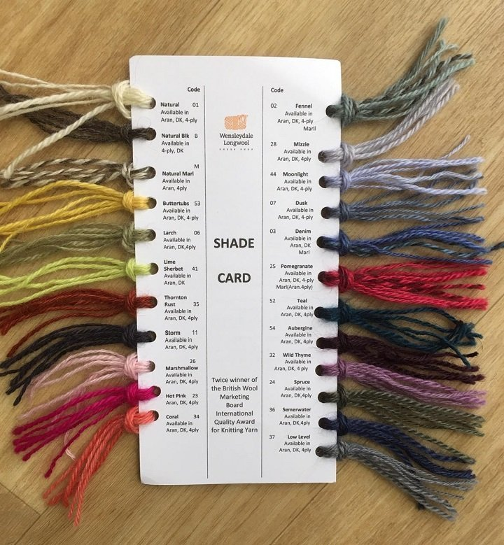
纱线标本卡
Yarn Specimen Card把真纱线缠绕固定在卡片上，旁边贴上该纱织成的成品布——上下对照。客户能直接看到 60S 桑蚕丝纱本体的光泽 vs 织成 17G 罗纹后的样子。这是针织独有的解释方式：纱定一切。
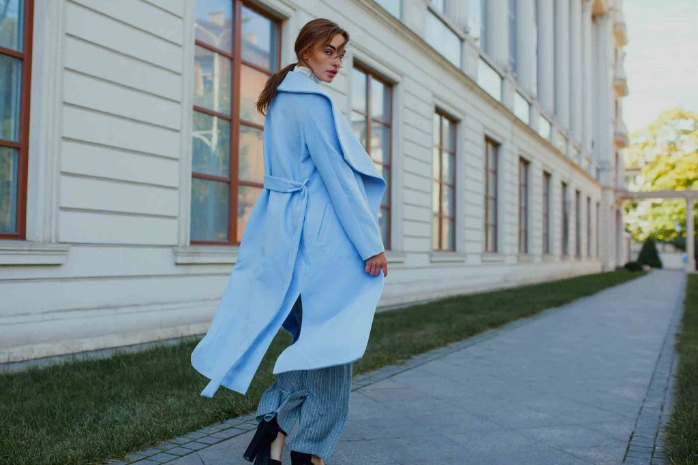
翻样夹 / 挂样
Hanger Sample / Header Card30×40cm 大样片顶部钉一片硬卡（成分、克重、幅宽、art-no.），中间打孔穿金属环——挂在样品架上，整面墙翻过去找布。这是面料贸易行最常用的 B2B 物料，业务员一句"墙上看一下"就完成了第一轮筛选。
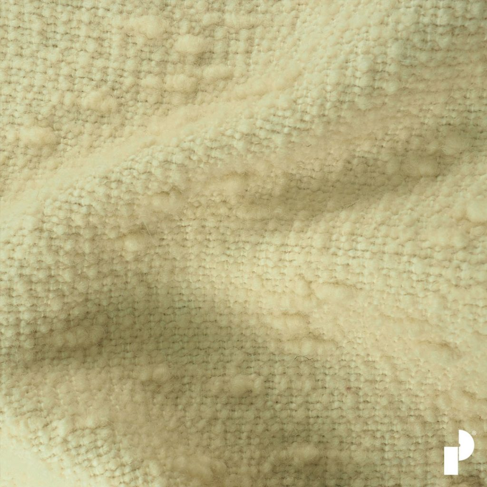
触感折页
Tactile Foldout Brochure多折拉页——展开是一整面，每折嵌入一片真实面料。打开第一折是双面针织，第二折是罗纹，第三折是毛圈，第四折是提花……一次操作完成整个系列的手感对比。客户在桌面上展开就像翻一本立体书。

圆机机型卡
Knitting Machine Card针织独有：把"哪台机器织出来的"做成可视化卡片——单面圆机、双面圆机、罗纹机、Interlock 机、电脑横机（Stoll/Shima），每张配一片该机型的代表性样布。客户做版型采购时，能直接对应"我要的是横机做出来的那种坑条"。
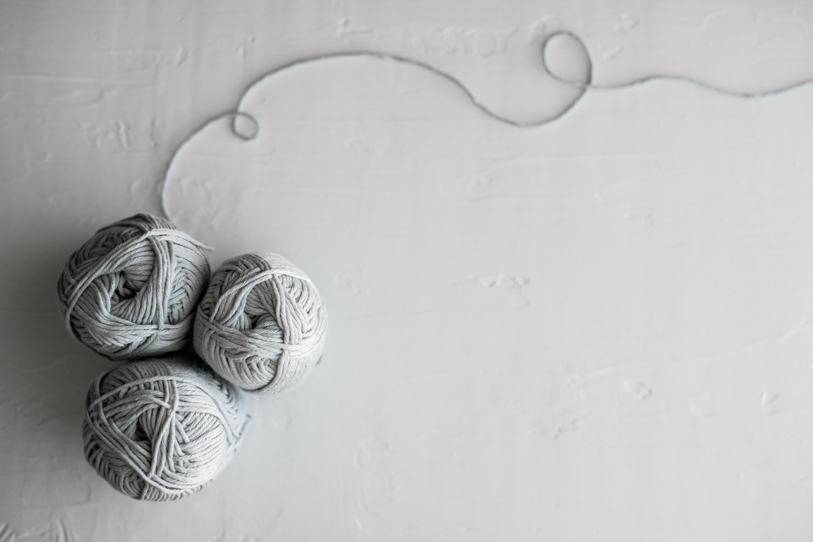
染色梯度卡
Shade Gradient Card同一款基布，染成 30+ 个色阶——做成长条卡片或扇形展开卡。每个色块都是真布，下方标 Pantone / 帛冠色号 / 染缸号。客户做季节配色提案时，直接对着卡选号，不用再拍照传 RGB 误差。
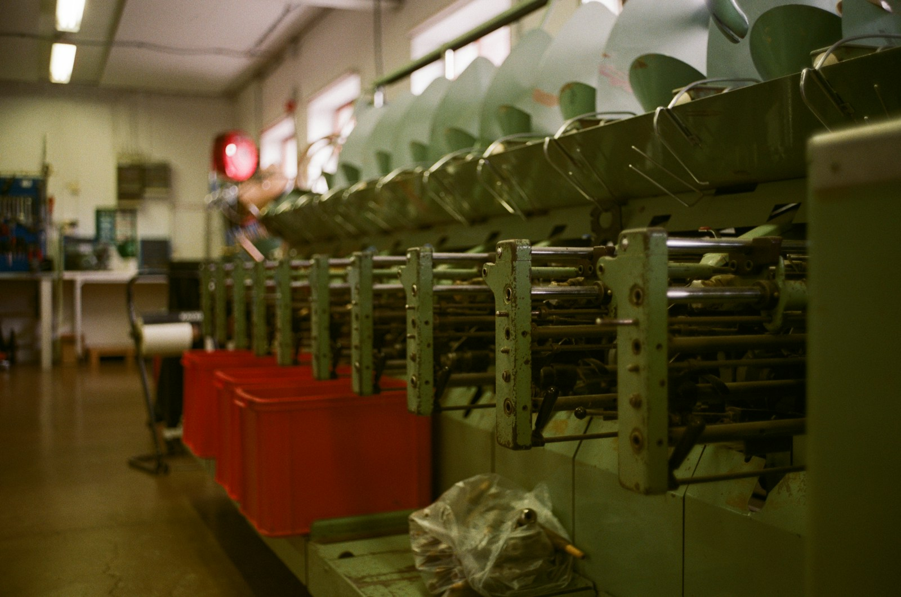
工艺流程长卷
Process Long-Scroll折叠长卷，从棉花原棉 → 纺纱 → 坯布 → 染色 → 后整理 → 成品逐节展开，每个节点贴一片真实样品（原棉、纱线、坯布片、染色后、整理后）。客户读完=认识了这块布的整条生命链，附加值不再是"参数表"而是"传记"。
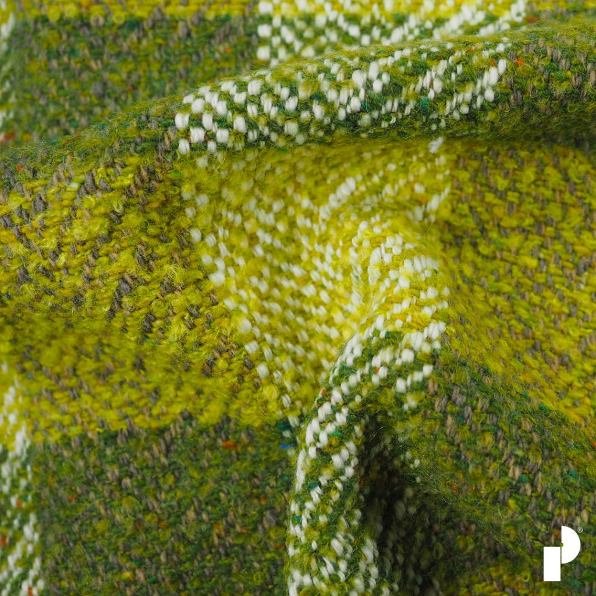
系列样衣盒
Capsule Sample Box礼盒装：面料样片 + 同款迷你成衣（缩小版 T 恤 / 小衫片 / 袖头样），让客户能直接看到"这块布做成衣服后是什么样"。这是针织面料推向品牌商时的杀手锏——跳过想象，直接见到成品力。
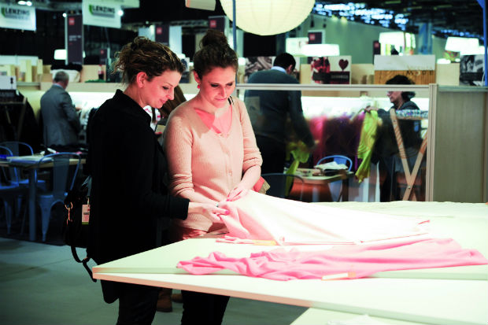
设计师合作 Zine
Designer Capsule Zine联合一位独立设计师 / 艺术家 / 摄影师做一本印刷 zine——内页夹入针织样片、设计草图、色彩故事、灵感图。面料从"原料"变成"作品的一部分"。客户拿走的不是宣传册，是一件可以收藏的印刷品。
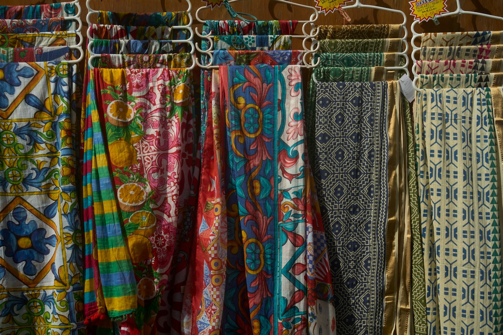
展会展板
Trade Show Knit Wall展会场景下的立体面料矩阵墙——把同一系列的 60+ 块布按主题分区悬挂（按色系 / 按机型 / 按场景），客户可以直接走过去触摸、抽出、对光。展会本身就是最大的"线下呈现形式"，但展板设计是有讲究的。
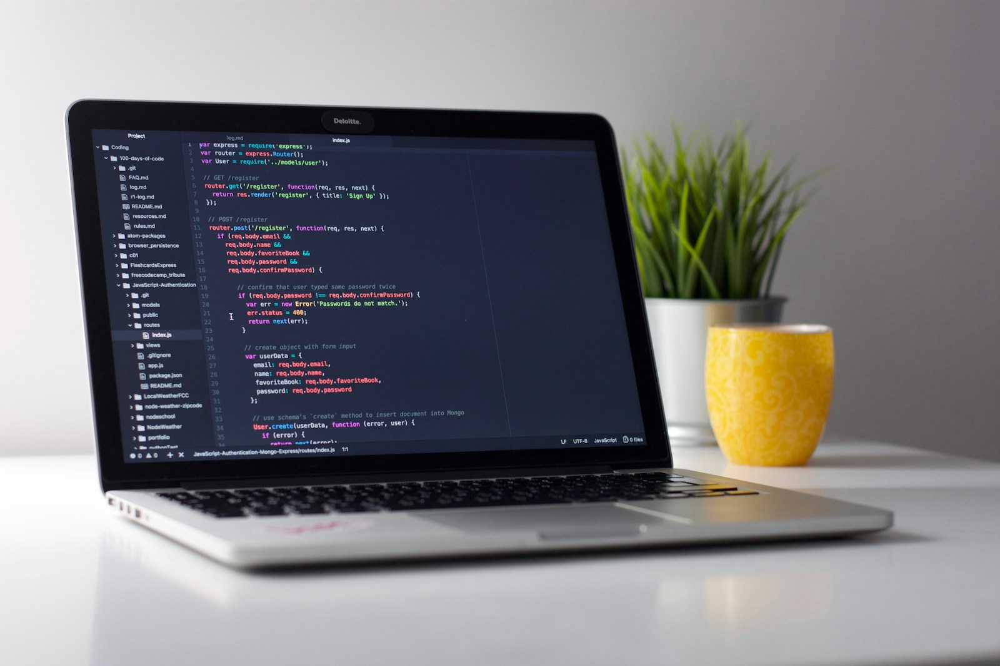
客户定制纸样夹
Custom Client BinderA3 大开本活页夹，按客户/按季节/按系列分仓——夹页里装真布 + 该款的成分页 + 历史版本对比。每位重点客户一本专属夹，业务员每次拜访就是"拿夹子去对答案"。这是面料贸易行延续了 50 年的销售工具，至今没有数字化方案能取代。